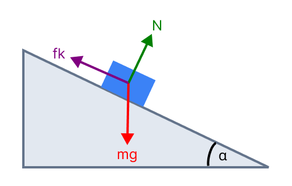

[תמונת השאלה המקורית]לא נמצאה תמונה בשם question-image.png באותה תיקייה.
תיאור המערכת ונתונים
בניסוי זה נבדקה תאוצתו של גוף המחליק על מדרון משופע בעל זווית \( \alpha \). המשתנה הבלתי תלוי היה מקדם החיכוך הקינטי \( \mu \), והמשתנה התלוי היה התאוצה \( a \).
\( \mu \) (מקדם חיכוך)
0.10
0.15
0.20
0.25
0.30
\( a \, [\text{m/s}^2] \) (תאוצה)
2.5
2.0
1.6
1.1
0.6
סעיף א': תרשים כוחות (FBD)
מה נתון: גוף על מדרון משופע בזווית \( \alpha \).
מה מחפשים: שרטוט כל הכוחות הפועלים על הגוף בזמן תנועתו.

תרשים לא זמין
שימו לב: כוח הנורמלי \( N \) תמיד ניצב למשטח, בעוד כוח הכובד \( mg \) תמיד מצביע למרכז כדור הארץ (אנכית מטה). כוח החיכוך \( f_k \) מתנגד לתנועה ולכן פועל מעלה המדרון.
סעיף ב': פיתוח קשר מתמטי
מה נתון: המערכת הדינמית מסעיף א'.
מה מחפשים: ביטוי של התאוצה \( a \) כפונקציה של מקדם החיכוך \( \mu \).
נוסחאות בשימוש: \( \Sigma F = ma \)\( f_k = \mu N \)
פתרון צעד-אחר-צעד:
1. נרשום חוק שני של ניוטון לציר \( y \) (ניצב למדרון):
\[ N - mg\cos\alpha = 0 \Rightarrow N = mg\cos\alpha \]
2. נרשום חוק שני של ניוטון לציר \( x \) (כיוון התנועה):
\[ mg\sin\alpha - f_k = ma \]
3. נציב את הביטוי לחיכוך \( f_k = \mu N \):
\[ mg\sin\alpha - \mu (mg\cos\alpha) = ma \]
4. נצמצם את המסה \( m \) ונבודד את \( a \):
\[ a = g\sin\alpha - \mu \cdot g\cos\alpha \]
הקשר הליניארי: \( a = (-g\cos\alpha) \cdot \mu + (g\sin\alpha) \)
סעיפים ג' ו-ד': שרטוט וניתוח הגרף
מה נתון: טבלת המדידות.
מה מחפשים: גרף ליניארי וניתוח משמעות נקודות החיתוך.
גרף: תאוצה כפונקציה של מקדם חיכוך
משמעות נקודות החיתוך:
חיתוך עם ציר ה-a (\( \mu=0 \)): התאוצה במדרון חלק ללא חיכוך (\( a = g\sin\alpha \)).
חיתוך עם ציר ה-μ (\( a=0 \)): מקדם החיכוך המקסימלי שמאפשר תנועה במהירות קבועה (\( \mu = \tan\alpha \)).
סעיף ה': חישוב זווית השיפוע \( \alpha \)
מה נתון: קו המגמה ששורטט וביטוי השיפוע \( -g\cos\alpha \).
מה מחפשים: מציאת ערך הזווית \( \alpha \).
חישוב צעד-אחר-צעד:
1. בחירת נקודות מהגרף: נבחר שתי נקודות שנמצאות על קו המגמה. כפי שצוין, נקודות הקצה של הטבלה נמצאות בדיוק על הקו:
זווית השיפוע של המדרון היא \( \alpha \approx 18.19^\circ \)
הערה קריטית לחישוב שיפוע: בבגרות, מורידים נקודות אם מחשבים שיפוע "מהטבלה". תמיד קחו את הנקודות מקו המגמה ששורטט. במקרה הזה, השתמשנו בערכי הטבלה רק בגלל שהם יושבים בדיוק על הקו ובגלל שהם רחוקים אחד מהשני (מה שמקטין את השגיאה היחסית). ככל שהמרחק בין הנקודות בגרף גדול יותר — הדיוק שלכם גבוה יותר!
נוסח השאלה המקורית
[תמונת השאלה המקורית]לא נמצאה תמונה בשם question-image.png.